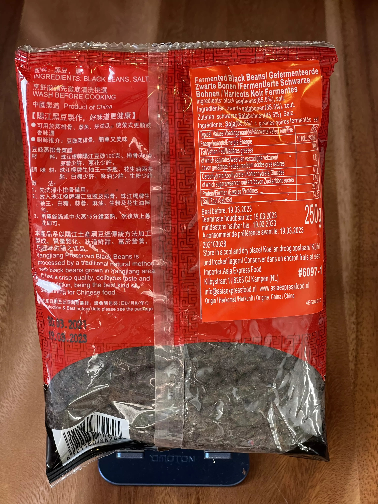

Fermented black beansAlternate names🇺🇸 tbd🇩🇪 Fermentierte schwarze BohnenOnline findings of this paste🇺🇸 Sichuan fermented black beans🇩🇪 Fermentierte schwarze BohnenStore findings🇩🇪 BETA Asia-Supermarkt, Stuttgart (Google Maps, Website) Pearl River Bridge Yang Jiang Preserved Black Beans Front site of Black Beans  Rear site of Black Beans